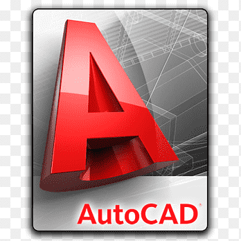
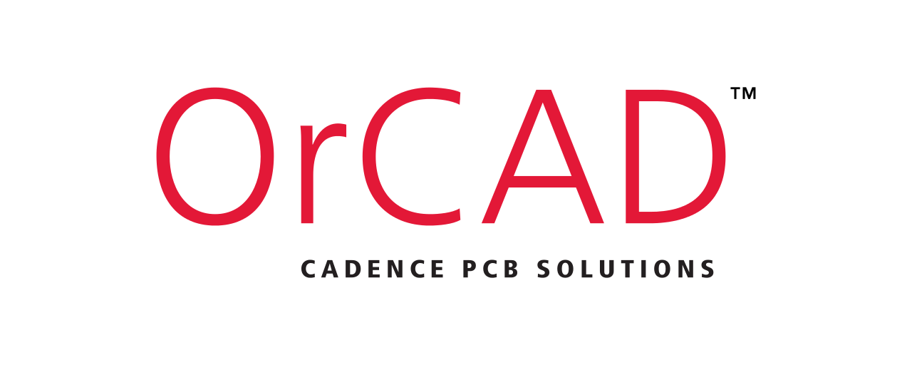

Creating Arrays, Mathematical Operations with Arrays, User-Defined Functions and Function Files, Three-Dimensional Plots,Applications in Numerical Analysis

Basic Syntax and Data Types, Arrays and Pointers, Data Structures and Algorithms, Standard Libraries and Preprocessor Directives:
Drawing and Editing Tools, Layers, Properties, and Blocks, 3D Modeling and Visualization, Industry-Specific Applications
Understanding the Orcad Capture interface for creating electronic circuit schematics, PCB Layout Design, Library Management

Circuit Design, Simulating electronic circuits to analyze their behavior under different conditions, Microcontroller Simulation and Development,